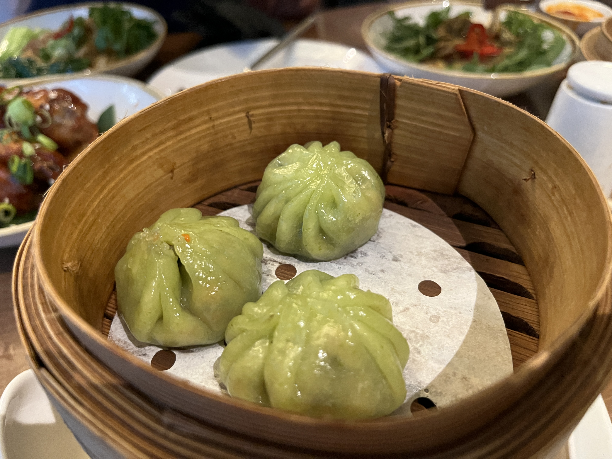
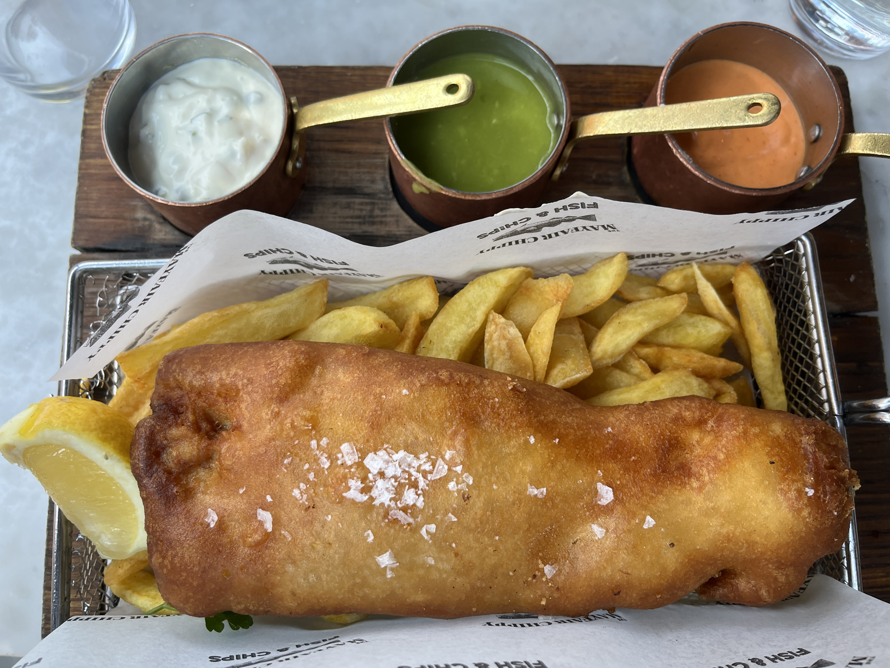
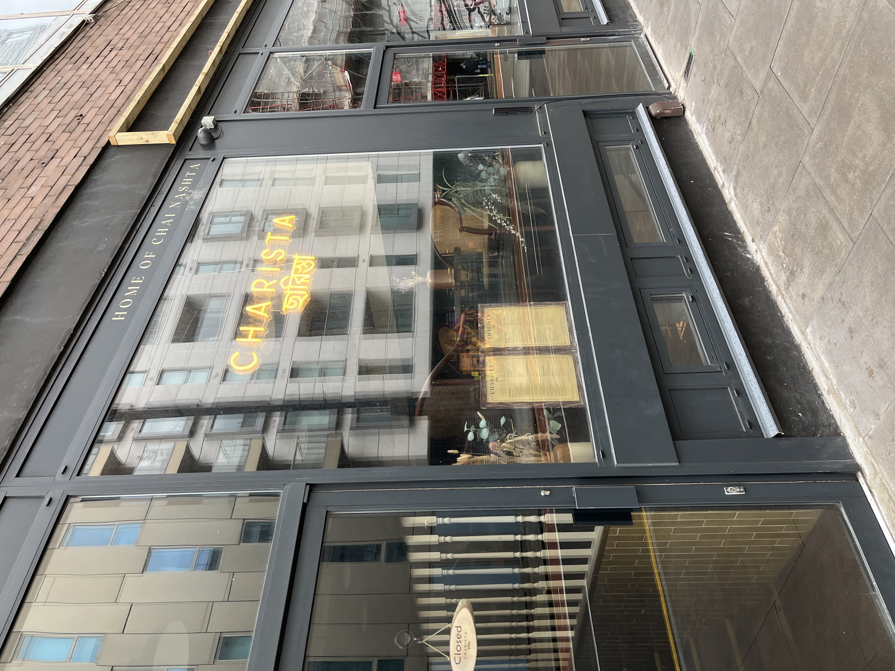
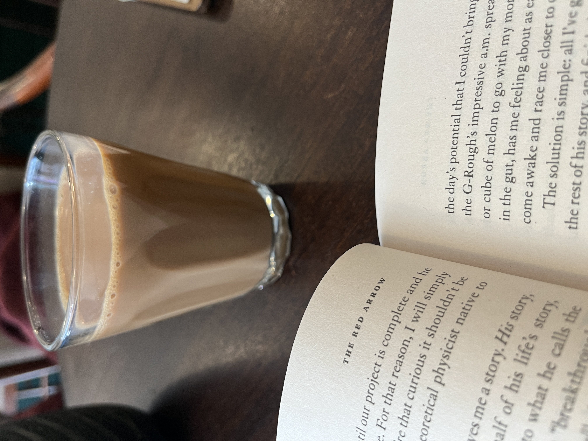

British Round-Up
London, England
Introduction
I’m in London for a month, but it only took me two days to realize that British food is very fried (gluten!) and lacks vegetables. There are plenty of restaurants with creative dishes and vegetables, but they are not quintessentially British. So, I’m hard-pressed to see how I can sample gluten-free British cuisine. I focused on chai, fish & chips, and high tea. There’s not much to say about high tea other than the fact that I did go to the one at The Royal Horseguards Hotel and it was indeed gluten-free. But overall, I realized that high tea is not that great. The tea itself is not really that important, and the little sandwiches and pastries are not to my taste. I don’t even get what the point is of combining tea with weird mayonnaise-y savory foods.
Although I didn’t set out to find it, I had some great Chinese food in London too! I had gluten free dumplings at Ping Pong and hot pot at Haidilao! Ping Pong was fantastic and had lots of options in my opinion. Haidilao is not as good as other hot pot places, because they don’t really make a super spicy soup like I want. But I got to see a bian lian performer and received some memorabilia at Haidilao, so it will always be a special memory to me!

Fish & Chips
I’m a bit lazy to go into the details of all the fish and chips places I went to, but I followed this guide. It’s a little outdated, so be sure to call ahead. We tried out Indigo, Mayfair Chippy, and Old Shades. Old Shades was by far the most fun place to go, because there was no line, and our bartender performed some incredible magic for us! The fish & chips were great for the price, but I think Indigo had the best overall taste. Mayfair Chippy was kind of unpleasant because we sat outside in the cold, and they gave a giant piece of fish that just fell apart as soon as I tried to pick it up. I guess there is such a thing as too tender! But they had a great tomato curry sauce that was non-traditional but really delicious. Overall, I definitely still like fish and chips, and I think they’re worth the hype, but I also cannot and will not eat the weird mushy green peas that always come with them.

Chai
Chai is obviously not “native” British cuisine. But I did come across many chai vendors who were cooking up the real deal, so I decided to give it a try. I love tea, and of course, British tea is of high quality. I’m also living in a neighborhood close to Whitechapel, one of the South Asian neighborhoods in London.
I’m not really a chai expert. I approached each chai with the following very subjective criteria:
- Spices: The chai should be garam unless otherwise specified. Some combination of ginger, cardamom, and cloves should pierce the eternal veil of British rain to warm me up. This is usually the criterion that is violated by the “chai tea lattes” of the world.
- Texture: Pure tea enthusiasts would scoff at the idea of adding milk to tea, but it is a crucial part of the chai experience. It should be creamy and velvety, not watery.
- Vibe: There is just a certain vibe that comes with drinking chai. It shouldn’t be overengineered or curated.
Karak Chai
I encountered my first chai experience near the Whitechapel open-air market on the weekend. I saw a sign for chai, so I rounded the corner to what was really an underwhelming chai “shop”. But I had the craving so I forged on. I got my chai but couldn’t pay there with my credit card. Instead, the owner sent me around the corner to a mobile SIM shop to pay. The SIM shop sent me back with a receipt. The whole thing was kind of endearing though inconvenient. It cost 1 pound and 5 minutes of my time.
This chai was the kind that you want to drink ASAP. When it’s hot, the texture is great, and the vibe is strong. The spices were kind of neutralized by sugar and milk, but it was overall very good. Within two minutes of getting it, it cooled off and became decidedly worse. The sugar felt sticky in my mouth and I didn’t like that. I usually like my drinks lukewarm, not scalding, so I wasn’t super happy with this experience. But pretty good for the price, and it gave me the vibe of eating street food (a rare feeling for celiacs).
Charista
I spotted this place on one of my runs and decided it looked trendy but authentic. They have a few different types of chai, and they also have snacks (which aren’t gluten-free). Intrigued by date molasses, I decided to try the Gurer chai. They served it to me in a normal glass, not a mug, which really enhanced the authentic chai experience: a fearful grip near the lip of the glass followed by the urgency to sip it before your fingertips burn. This chai was really good - I can’t blame them for the lack of spices because the cashier did tell me it would be sweet. The depth of the dates as a sweetener compensated pretty well though.

